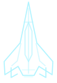
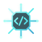
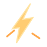
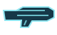
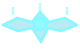

Так удобнее управлять кораблём и видеть происходящее.





Колёсиком мыши выберите ручное оружие: комету, минный веер, рельс или гаубицу (последние два — после установки). Зажмите ПКМ для прицеливания, отпустите для выстрела. Короткий щелчок ПКМ по турели открывает меню улучшений; удержание ПКМ по-прежнему позволяет выстрелить в эту область. ЛКМ отмечает приоритетного врага. Каждое ручное орудие перезаряжается отдельно. Для изменения масштаба используйте + / − либо Ctrl + колесо.
Нажмите на клавишу в списке, чтобы изменить её.
В бою нужны движение, две кнопки мыши и пробел для постоянного тактического устройства. Прокатное полевое оружие запускается отдельной клавишей. На телефоне коснитесь точки для кометы; для мин сначала выберите экранную кнопку «Мины», затем точку установки.
Эти команды необязательны для обычного боя. Ctrl + ЛКМ ставит короткую метку на противнике, чтобы автоматические орудия предпочли его. Рельс и гаубицу можно также выбрать колесом мыши. Карту открывают Tab и M; M закрывает её, а Tab внутри карты позволяет переходить между кнопками.
Базовый навык работает сам. Изучите «Энергетического паразита» на 2-м уровне. При сильном ударе или опасно малой прочности корпуса он автоматически потратит одно энергоядро и частично защитит корпус. Ничего нажимать не нужно.
Откуда берутся ядра? Каждый третий лично уничтоженный обычный дрон оставляет подбираемый заряд (если запас ещё не полон). Пролетите через светящийся шар. Максимум — два ядра; маленькие шарики рядом с кораблём показывают их количество.
Как захватить врага? Дополнительно изучите «Паразитный захват». Попадите «Голубой кометой» по обычному дрону: ближайший к центру попадания враг получит короткую метку. Добейте отмеченного врага лично, пока метка видна, с энергоядром в запасе. Он станет союзником на 16 секунд; следующий захват доступен через 22 секунды.
Как включить разведку? Изучите «Паразит-передатчик» и попадите кометой по достаточно прочному врагу в режиме «Разведка». Если изучены и захват, и передатчик, смените режим в панели «Способности» во время полёта или в меню развития. Сам базовый паразит защищает автоматически: пробел здесь ни при чём.
Автооружие стреляет само, если враг в пределах досягаемости. Колёсико выбирает ручное оружие, ПКМ при удержании показывает прицел, при отпускании — стреляет. Комета поражает область, минный веер ставит завесу; оба устройства имеют отдельную перезарядку. Установленный рельс создаёт управляемый луч на пять секунд: после отпускания ПКМ ведите мышью луч по врагам. Гаубица готовит тяжёлый снаряд. ЛКМ отмечает противника как приоритетную цель автоматических орудий, не расходуя заряд ручного оружия.
Развитие кометы и мин доступно за очки пилота: «Расширение кометы» увеличивает область взрыва, «Минный строй» добавляет капсулы. Новый минный веер заменяет предыдущий, поэтому карта не заполняется минами бесконечно.
Опыт растёт за бои и выполненные задачи. Новый уровень даёт очко развития. Откройте «Способности» и изучите навык: он останется с вами до конца вылета.
Награды из зрачков бывают разными. Ремонтная капсула сразу восстанавливает корпус. Временный боевой усилитель хранится в запасе и автоматически включается при встрече с серьёзной угрозой; он отличается от энергоядра паразита. Постоянные навыки приобретаются за очки развития.
Станции позволяют ремонтироваться, готовить корабль и развивать сеть. Соединённые станции дают преимущества в зоне действия сети; подробности и доступные действия показаны в меню станции и на карте.
Вражеские укрепления развиваются со временем. Можно уничтожать отдельные постройки и отступать для ремонта. Патрули и источники подкреплений реагируют на события в секторе — постоянного таймера волн нет.
Добыча и задания: подлетите к отмеченному объекту и удерживайте «Действие», если появляется соответствующая подсказка. Чтобы найти цель задания и маршрут, откройте карту.
Стыковка с активной станцией сохраняет корабль, ресурсы и состояние мира. Возврат к стыковке отменяет более поздние события.
Советы появляются при первом знакомстве с механикой. Всё можно прочитать здесь позже.
Обучающие подсказки можно отключить. Предупреждения об угрозах, боевые сообщения и подписи действий останутся на экране.
Мы используем музыку и графику авторов, которые разрешили включать их работы в игры. Спасибо им за эту возможность.
Все перечисленные композиции написал Scott Buckley. Лицензия — CC BY 4.0.
Music by Scott Buckley — released under CC-BY 4.0. www.scottbuckley.com.au. Исходные MP3 перекодированы в Ogg/Opus для игры; произведения не переаранжированы.
Tiny Spaceships — Disruptor Art, CC BY 4.0. Исходная анимация переработана: отделены изображения кораблей, удалён фон, изменены кадры и эффекты свечения.
Благодарим Kenney, Quaternius, авторов эффектов с OpenGameArt (rubberduck, Joth, Julie Damsgaard / Spring Spring). Их ресурсы опубликованы по CC0.
Упоминание авторов не означает, что они одобряют игру или участвуют в её разработке.